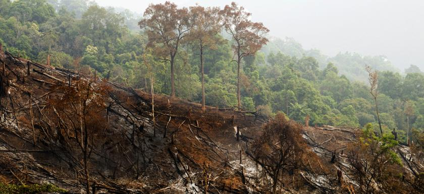
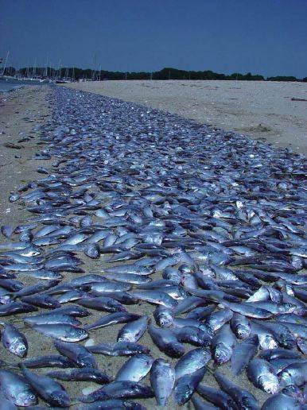

It is the number one problem of the Earth since it is the increase of Earth's temperature due to the greenhouse gases that is polluting the air such as carbon dioxide that the fossil fuels produce. A change that is believed to be permanently changing the Earth's climate
No matter where in the world we live - we all are affected by global warming in some way or another. Global warming effects are many, and they are different depending on which part of the planet you belong to. Read more...
Reducing tropical deforestation can significantly lower global warming emissions and — together with efforts to reduce emissions from fossil fuels — plays an integral role in a comprehensive long-term solution to global warming. Read more...
Thanks to growing marine dead zones that are caused by global warming, there's been a huge spike in dead sea life in recent years-- and it often washes up on shore, providing us with an unsubtle reminder. Read more...